Introduction to Multivariable Analysis
Section 5 — Introduction to Biostatistics
Jose Andres Calvache MD MSc PhD
Department of Anesthesiology, Universidad del Cauca, Colombia
Department of Anesthesiology, Erasmus University Medical Centre, Rotterdam, The Netherlands
2026-10-04
Section objectives
- General introduction to multivariable analysis
Multivariable analysis
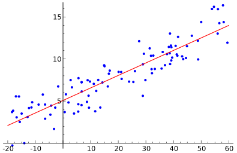
Example: chronic low back pain
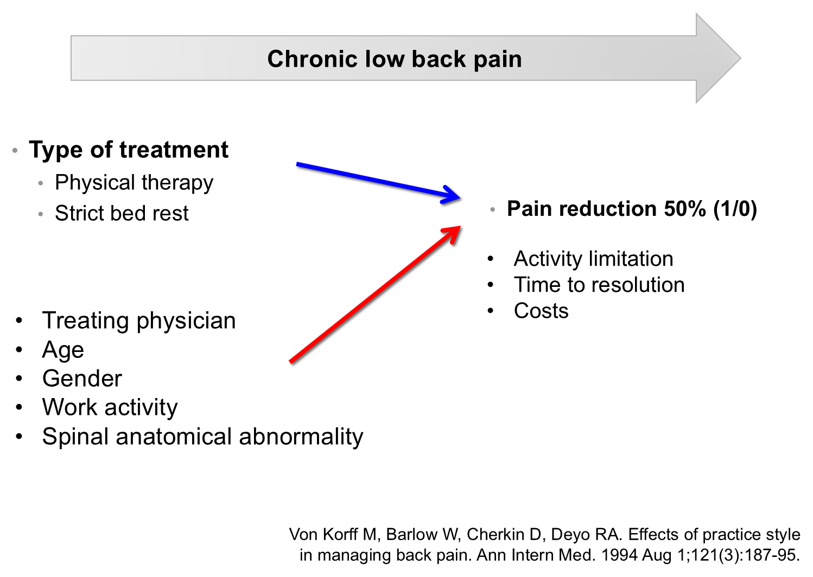
1071 patients (44 physicians). Von Korff M, et al. Ann Intern Med. 1994;121(3):187-95.
What is multivariable analysis?
Statistical techniques to establish the unique (independent) contribution of a variable or a group of variables to an outcome.
It allows us to examine the effect of the treatment (bed rest vs physical therapy) while holding the other factors constant or fixed.
Many statistical techniques focus on the analysis of one or two variables.
Multivariate or multivariable regression?
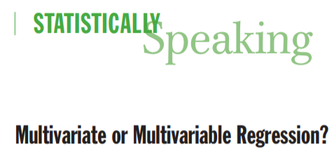
Multivariate or multivariable regression? (cont.)
- Statistically speaking, multivariate analysis refers to statistical models that have 2 or more dependent or outcome variables
- Multivariable analysis refers to statistical models in which there are multiple independent or response variables.
Multivariable analysis and confounding
Multivariable analysis is a method to control for confounding
(it is not the only method)
For example,
With the use of multivariable analysis it was possible to show that tobacco exposure has an independent relationship with the risk of cardiovascular disease, after adjusting for factors such as sedentary lifestyle, obesity, gender, age and arterial hypertension.
Age and systolic blood pressure
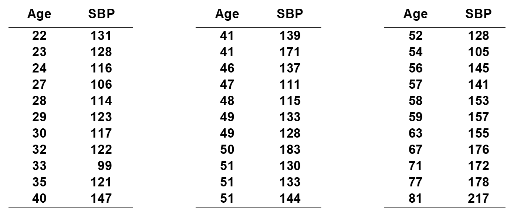
Age and systolic blood pressure — scatter plot
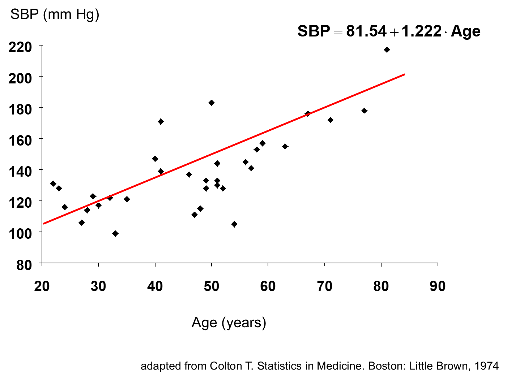
Simple linear regression
- Relationship between two continuous variables (SBP (y) – age (x))
- Regression coefficient \(\beta_1\)
- Measure of association between y and x
- How much y changes on average when x changes by one unit
- Least squares method
Simple linear regression — the slope
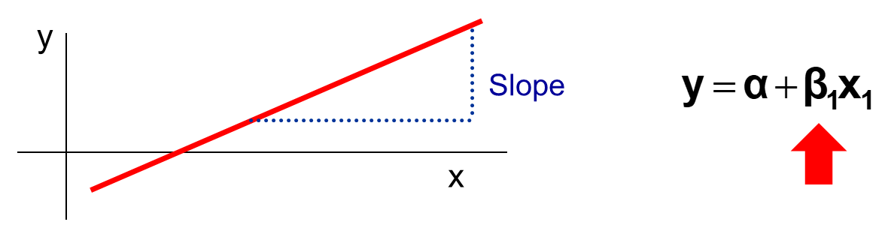
Multiple linear regression
- Relationship between a continuous variable and a group of continuous or categorical variables
\[y = \alpha + \beta_1 x_1 + \beta_2 x_2 + \dots + \beta_i x_i\]
Multiple linear regression — coefficients
- (Partial) regression coefficients \(\beta_i\)
- Amount by which y changes on average when \(x_i\) changes by one unit while all the other \(x_i\) variables remain constant
- Measure of association between \(x_i\) and y adjusted for the effect of all the \(x_i\) variables
- Example,
- SBP versus age, weight, height, gender, etc.
Regression equation
\[y = \alpha + \beta_1 x_1 + \beta_2 x_2 + \dots + \beta_i x_i\]
Regression equation — terminology
| Dependent |
Independent variables |
| Predicted |
Predictor variables |
| Response variable |
Explanatory variable |
| Outcome variable |
Covariates |
Types of multivariable analysis
| Continuous |
Blood pressure, weight, blood glucose |
Simple linear regression; multiple linear regression |
| Binary (qualitative) |
Death, remission, presence of infarction |
Logistic regression |
| Time to event |
ICU length of stay, time to infarction, time to cancer remission |
Proportional hazards model or Cox regression |
Outcome: continuous
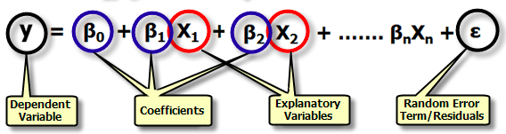
Outcome: continuous — example
We studied the relationship between systolic blood pressure (SBP) and height in 100 children. It is known that height and weight are positively correlated. We therefore performed a multiple linear regression analysis to investigate the effects of height (cm), weight (kg) and sex (0 = boy, 1 = girl) on SBP (mmHg) in these children.
Outcome: continuous — results
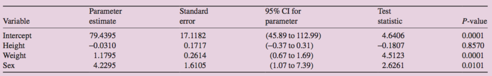
Outcome: continuous — fitted equation
\[SBP = 79.44 - (0.03 \times height) + (1.18 \times weight) + (4.23 \times sex)\]
Outcome: binary
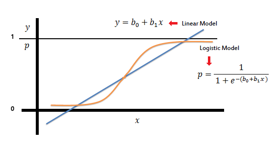
Linear model vs logistic model
Outcome: binary — logistic model
\[\log\left(\frac{\pi}{1-\pi}\right) = \beta_0 + \beta_1 x_1 + \beta_2 x_2 + \dots + \beta_m x_m\]
\[P = \frac{1}{1 + e^{-(\beta_0 + \beta_1 x_1 + \beta_2 x_2 + \dots + \beta_k x_k)}}\]
Outcome: binary — example (1/4)
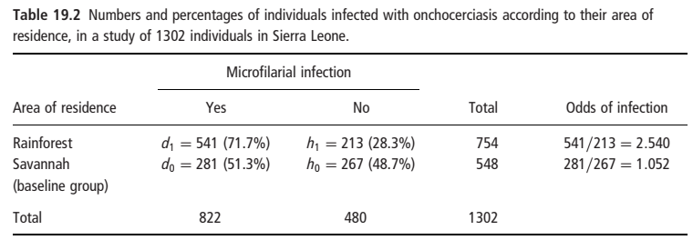
Outcome: binary — example (2/4)
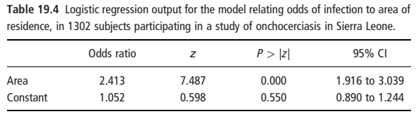
Outcome: binary — example (3/4)
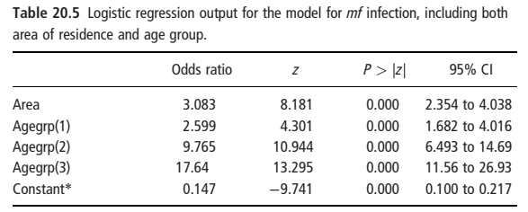
Outcome: binary — example (4/4)
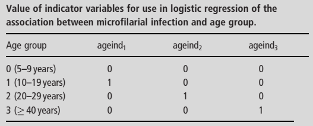
Outcome: time to event
Cox proportional-hazards model
\[h(t) = h_0(t)\, e^{B_1 x_1 + B_2 x_2 + \dots + B_k x_k}\]
where
- \(h(t)\) = the hazard at time t
- \(h_0(t)\) = the hazard for a person with the value of 0 for all independent variables
- \(B\) = the regression coefficient for the independent variable x
- \(x\) = an independent variable
Uses of multivariable techniques
- Causal models
- Isolate the effect of a single predictor on an outcome.
- Confounding is crucial and important
- Prognostic models
- Predict the occurrence of an outcome based on several predictors.
- Confounding is not relevant, but other phenomena such as collinearity are
Example: Cox regression in a published study
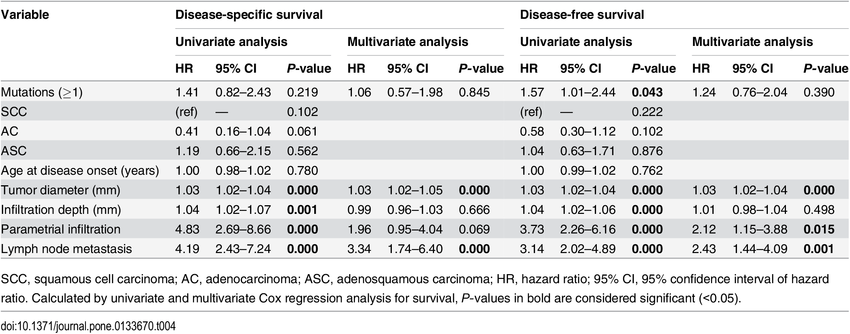
doi:10.1371/journal.pone.0133670.t004
Common statistical tests are linear models
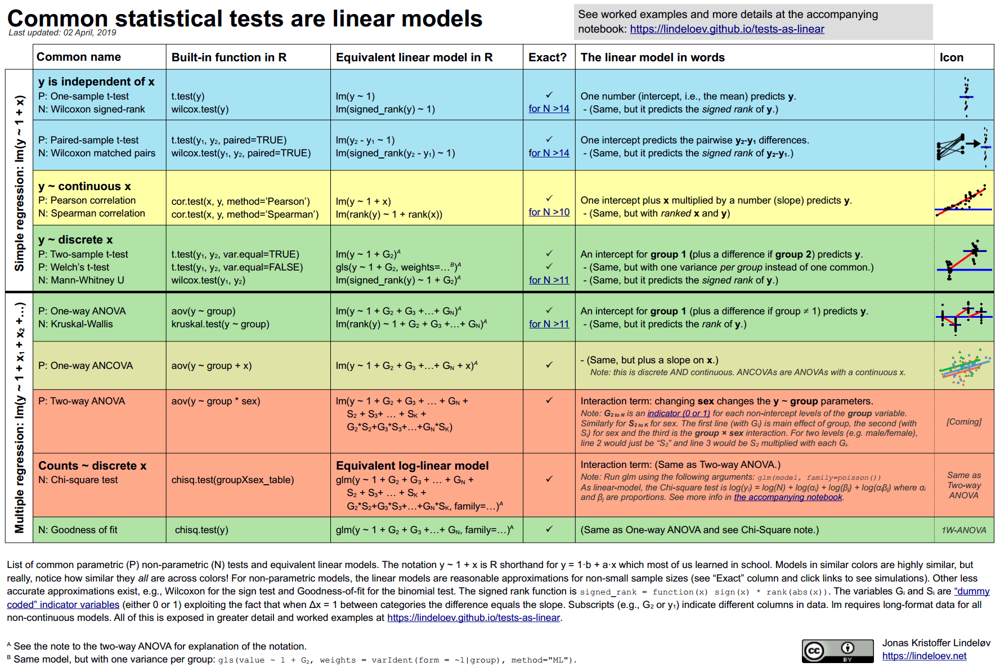
Lindeløv JK. Common statistical tests are linear models. https://lindeloev.github.io/tests-as-linear/
Choosing a statistical analysis
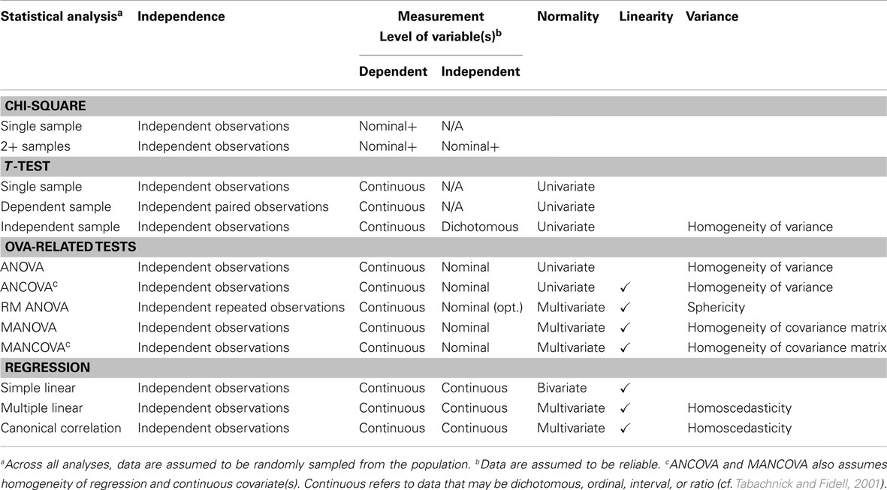
Final critical points (1/2)
- Seek expert advice: Contact a biostatistician or professor; they will help you validate the study design, choose the right tests and interpret the results.
- Plan and define your variables: Before starting, clarify what type of data each variable is (nominal, continuous, etc.) and how you will code it in the software.
- Clean and validate your database: Review and handle missing data and outliers, and check the distribution (normality) of your variables.
Final critical points (2/2)
- Do descriptive statistics first: Summarize your data with means, medians and graphs; this lets you understand the sample and identify initial errors.
- Understand the fundamentals of the tests: Learn what the null hypothesis (H0) and the p value mean; do not just report the number without understanding it.